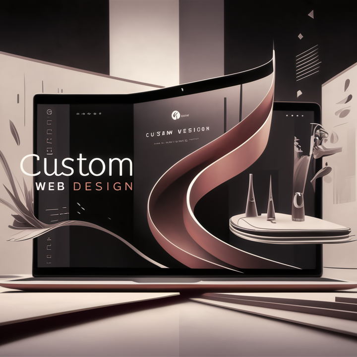

Soluciones Digitales WEB para impulsar tu presencia en línea
¿Quieres asegurarte de que las personas te encuentren en línea?
Con AM Arthur y Sericios Digitales, optimizamos tu presencia en línea para
lograr que la información de tu empresa se destaque en las Búsqueda de
Google, Maps, Redes Sociales e Internet en general; ¡es más fácil de lo
que crees y muy accesible!
Partimos de un breve análisis, entendemos y precisamos tus objetivos y con
base a ello, crearemos un perfil comercial atractivo, gráfico, interesante
y acorde a los estándares que demandan los actuales organismos
internaciones que rigen la presencia en internet, que te ayudará a atraer
nuevos clientes, a involucrar a tus clientes actuales y a estár justo ahí
en cualquier dispositivo móvil cuando te busquen.
Servicios Destacados
Diseño y Desarrollo WEB

Diseños web personalizados que reflejan la esencia de tu marca y
ofrecen una experiencia de usuario excepcional
Posicionamiento Local
Optimización de perfiles en Google para mejorar la visibilidad local
en línea y atraer a más clientes.
Redes Sociales
Estrategias de gestión y publicidad en redes sociales para aumentar la
presencia y el compromiso de la marca.
Creatividad Digital
Diseño de campañas creativas y estratégicas en línea para destacar
entre la competencia y alcanzar a tu público objetivo.
AudioVisual
Producción de contenido audiovisual de alta calidad para mejorar la
narrativa de la marca y captar la atención del público.
I.A. Generativa
Implementación de tecnología innovadora para impulsar la creatividad,
el contenido y la personalización de la marca.
Beneficios para el cliente
Mejora de la visibilidad en línea y aumento de la presencia de marca.
Diseños web profesionales que generan confianza y atraen a los clientes.
Estrategias digitales creativas que generan compromiso y aumentan las
conversiones.
Contenido audiovisual impactante que cuenta la historia de tu marca de
manera memorable.
Integración de tecnología de vanguardia para impulsar la innovación y la
diferenciación.
¿Listo para llevar tu negocio al siguiente nivel?
Deja de tirar tu dinero en estrategias obsoletas.
¡Descubre cómo podemos ayudarte a alcanzar tus metas en línea!